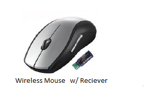

Shakshat Virtual Lab 
INDIAN INSTITUTE OF TECHNOLOGY GUWAHATI
THEORY
Mouse Sensitivity
Mouse sensitivity is important for a cartographer or a GIS specialist or an artist who will use the mouse as pencil to do complex tasks. For such applications one has to take care of minimizing drawing errors. Error minimizing can be achieved by making the mouse less sensitive or by increasing the area of interaction on the screen (zooming in - zooming out). For example - artists who use the mouse as a brush will be severely impaired if errors creep in while painting a figure with mouse pixel by pixel.
Also in the case of complex data such as large excel sheets it becomes important to point the mouse to the required cell and click on it. This involves eye movement, hand control and paying attention to the data simultaneously.Thus mouse-centered interaction design considers sensitivity of mouse, the control area and the response time.
Studying Mouse Control Variations
The mouse usage and movement patterns are different for a child and that for an adult. For the elderly we need to make the mouse less sensitive in order to accomodate age related unsteadiness of the hand or fingers. The time and effort required to successfully achieve a desired task for a mouse oriented interaction differs for different age group users.
Mouse as a Pointing Device
The mouse is a hand held device that is used to guide the on-screen cursor (usually appearing as an arrow) to an area of choice, and then clicking a button to select that choice. You can select, move, open , drag and change objects on the screen with the mouse. Most computer programs now a days are designed to be mouse driven. The device can be a standard mouse, a child sized mouse, a trackball or a joystick. Below are few commercial examples:
|
|
|
 |


Skills Needed for Learning to Use a Mouse
Visual Skills
1. Ability to attend to the computer screen.
2. Ability to identify the cursor and track its movements as it moves across the screen.
Motor Skills
1. Ability to grasp the device.
2. Ability to direct its movements.
3. Ability to click the button(s) at the appropriate times.
4. Ability to coordinate the visual and motor demands simultaneously.
(Reference - http://www.kidsability.ca/uploads/Common/pdfs/ACS/Developing%20Early%20Mouse%20Skills.pdf )
How to use a mouse effectively?
Your index finger should rest on the Left Mouse Button and your middle finger should rest on the Right Mouse Button. To use the scroll wheel move your index finger to the wheel. Remember the mouse can be very sensitive to small movements. Rest the heel of your hand on the surface behind the mouse and keep it on the surface when moving. Press gently and quickly on the mouse buttons when clicking.
Do not twist or rotate the mouse and make sure that the ends of the mouse point forward and back on the mouse pad. Grip the mouse gently with your thumb on one side and your ring & little finger on the other side.
( Reference : http://www.graftonpl.lib.oh.us/Class%20Mouse.pdf )
Types of Mouse Clicks
Left Click or simply Click, selects object the pointer is on.
Right Click opens a context sensitive menu (changes depending on object) containing commands.
Double-Click means pressing the left button twice in quick succession and will open files, folders & programs.
Click and Drag means pressing the left button and holding it down, then moving the mouse. This is used to select multiple objects and sections of text.
Drag and Drop begins with a click & drag on an object to move it to another location/folder.